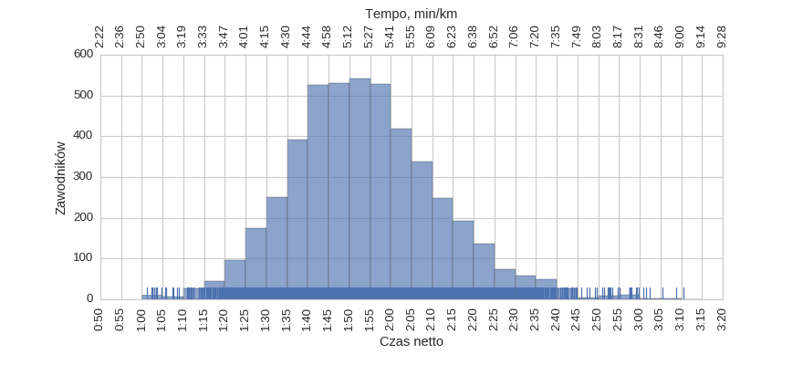
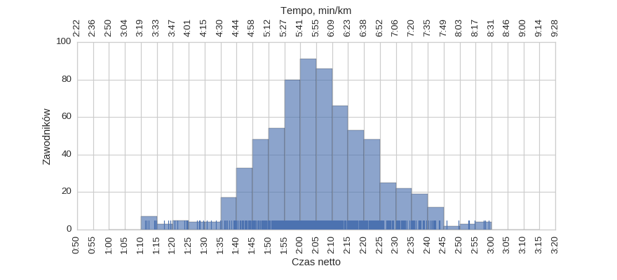
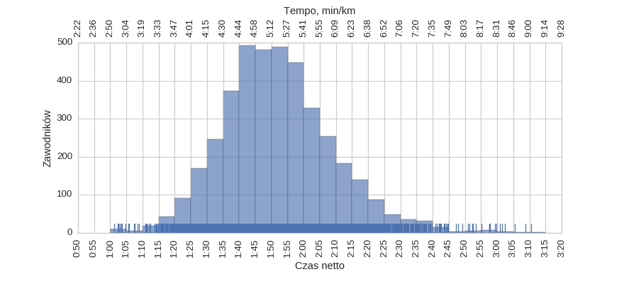

6 Półmaraton Warszawski (2011)
Histogramy
Klasyfikacja generalna

| mean | std | min | 25% | 50% | 75% | max | |
|---|---|---|---|---|---|---|---|
| czas | 1:53:59 | 0:17:53 | 1:01:17 | 1:41:46 | 1:52:51 | 2:04:42 | 3:10:38 |
kobiety

| mean | std | min | 25% | 50% | 75% | max | |
|---|---|---|---|---|---|---|---|
| czas | 2:05:26 | 0:17:37 | 1:11:26 | 1:54:33 | 2:04:48 | 2:16:13 | 2:59:00 |
mężczyźni

| mean | std | min | 25% | 50% | 75% | max | |
|---|---|---|---|---|---|---|---|
| czas | 1:52:02 | 0:17:11 | 1:01:17 | 1:40:31 | 1:50:53 | 2:01:56 | 3:10:38 |
Wykresy rybkowe
wg płci

| czas | count | |||||||
|---|---|---|---|---|---|---|---|---|
| mean | std | min | 25% | 50% | 75% | max | ||
| plec | ||||||||
| K | 2:05:26 | 0:17:37 | 1:11:26 | 1:54:33 | 2:04:48 | 2:16:13 | 2:59:00 | 686 |
| M | 1:52:02 | 0:17:11 | 1:01:17 | 1:40:31 | 1:50:53 | 2:01:56 | 3:10:38 | 4013 |
wg kategorii
| czas | count | |||||||
|---|---|---|---|---|---|---|---|---|
| mean | std | min | 25% | 50% | 75% | max | ||
| kat | ||||||||
| K25 | 2:02:38 | 0:18:52 | 1:14:50 | 1:52:56 | 2:05:36 | 2:16:20 | 2:38:41 | 73 |
| K30 | 2:03:40 | 0:18:16 | 1:11:26 | 1:55:01 | 2:04:53 | 2:12:19 | 2:57:38 | 165 |
| K35 | 2:05:13 | 0:16:52 | 1:24:37 | 1:54:25 | 2:03:25 | 2:15:01 | 2:57:56 | 154 |
| K40 | 2:07:06 | 0:16:24 | 1:14:57 | 1:57:02 | 2:05:00 | 2:18:57 | 2:43:36 | 128 |
| K45 | 2:04:36 | 0:16:12 | 1:20:40 | 1:52:01 | 2:03:54 | 2:14:32 | 2:38:55 | 76 |
| K50 | 2:09:50 | 0:16:53 | 1:35:19 | 1:58:21 | 2:08:06 | 2:19:42 | 2:52:48 | 43 |
| K55 | 2:07:25 | 0:20:27 | 1:40:57 | 1:48:50 | 2:02:30 | 2:20:48 | 2:53:03 | 27 |
| K60 | 2:08:37 | 0:16:23 | 1:45:54 | 1:55:51 | 2:11:39 | 2:16:43 | 2:42:09 | 15 |
| M25 | 1:48:08 | 0:17:16 | 1:02:26 | 1:36:47 | 1:47:02 | 1:58:58 | 2:44:32 | 367 |
| M30 | 1:52:27 | 0:17:33 | 1:01:17 | 1:41:27 | 1:52:35 | 2:03:26 | 2:57:38 | 629 |
| M35 | 1:52:28 | 0:17:46 | 1:03:25 | 1:40:36 | 1:51:09 | 2:01:41 | 3:10:38 | 856 |
| M40 | 1:51:56 | 0:15:52 | 1:14:55 | 1:40:52 | 1:50:30 | 2:01:18 | 3:01:26 | 908 |
| M45 | 1:52:16 | 0:16:43 | 1:13:47 | 1:41:04 | 1:50:03 | 2:02:13 | 3:00:50 | 549 |
| M50 | 1:50:12 | 0:16:55 | 1:12:32 | 1:39:10 | 1:50:36 | 1:59:31 | 2:59:40 | 296 |
| M55 | 1:52:10 | 0:17:15 | 1:18:32 | 1:40:47 | 1:49:30 | 2:01:06 | 2:55:13 | 222 |
| M60 | 1:54:03 | 0:16:53 | 1:20:11 | 1:41:11 | 1:52:58 | 2:03:42 | 2:39:25 | 107 |
| M65 | 2:03:10 | 0:19:04 | 1:32:26 | 1:51:22 | 2:00:30 | 2:13:42 | 3:08:44 | 52 |
| M70 | 2:05:44 | 0:18:41 | 1:40:19 | 1:50:14 | 2:03:28 | 2:14:40 | 2:42:30 | 18 |
| M75 | 2:16:30 | 0:17:52 | 1:59:44 | 2:02:59 | 2:12:39 | 2:26:21 | 2:44:32 | 7 |
wg krajów
| czas | count | |||||||
|---|---|---|---|---|---|---|---|---|
| mean | std | min | 25% | 50% | 75% | max | ||
| kraj | ||||||||
| France | 1:53:42 | 0:15:38 | 1:22:23 | 1:42:30 | 1:56:45 | 2:01:55 | 2:41:13 | 43 |
| Germany | 1:57:18 | 0:17:10 | 1:24:36 | 1:49:52 | 1:54:19 | 2:07:23 | 2:36:43 | 25 |
| Japan | 2:01:14 | 0:15:56 | 1:39:56 | 1:50:58 | 1:56:10 | 2:06:43 | 2:30:48 | 10 |
| Polska | 1:54:08 | 0:17:42 | 1:02:26 | 1:41:50 | 1:52:52 | 2:04:41 | 3:10:38 | 4464 |
| Spain | 1:47:00 | 0:12:53 | 1:23:03 | 1:37:27 | 1:50:45 | 1:56:09 | 2:07:13 | 14 |
| United Kingdom | 1:51:30 | 0:18:51 | 1:20:51 | 1:39:19 | 1:47:58 | 2:02:42 | 2:35:23 | 21 |
| United States | 2:02:55 | 0:16:16 | 1:40:11 | 1:48:46 | 2:02:35 | 2:13:38 | 2:42:09 | 23 |
Menu
HistogramyWykresy rybkowe
∙ wg płci
∙ wg kategorii
∙ wg krajów
Liczba uczestników: 4700
Wygenerowano: 2016-03-27 12:39:58.359517